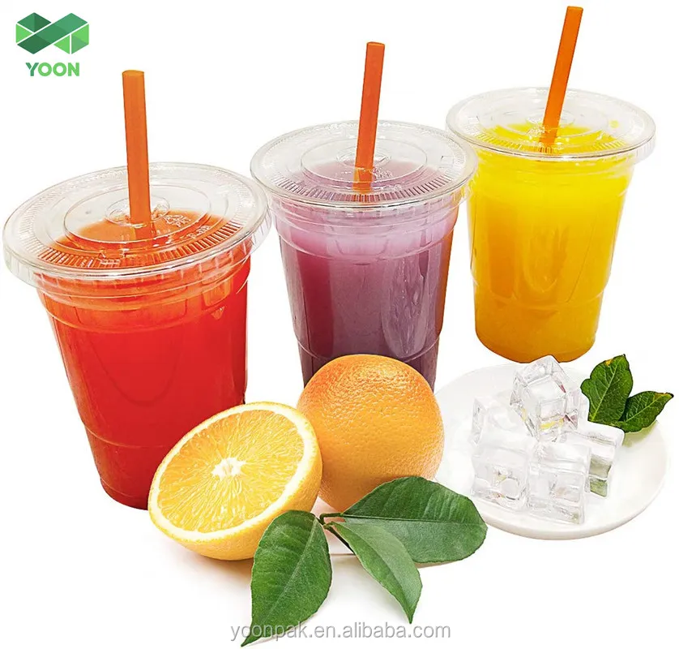

Avaliação da Comida
Misto-Quente
*não contem o presunto
Um classico, a maioria de quem lancha na cantina lancha isso todo dia
Misto quente, é composto de: fatias de pão de forma com um quejo entre elas, e tudo isso frito em uma sanduicheira.
Café com leite

Aida mais classico que o Misto, mas infelismente não tem muita gente que compra
Café com leite é auto esplicatorio.
Suco de poupa

Suco de poupa é muito bom e saldavel, mas não é um dos melhores.
Suco de polpa é o unico que não é feito na hora mas ainda é muito bom.